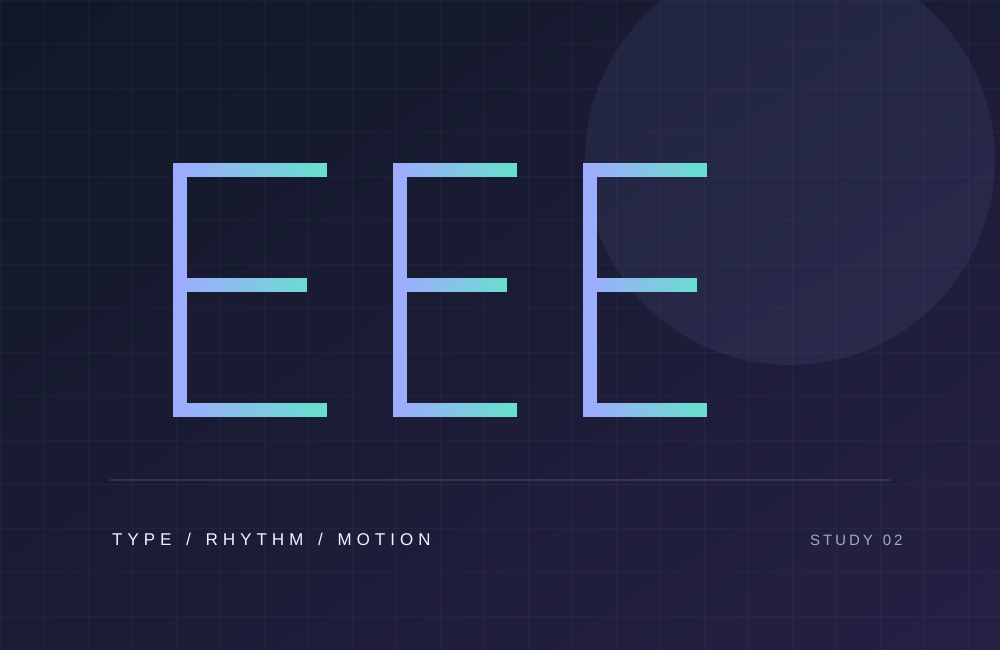
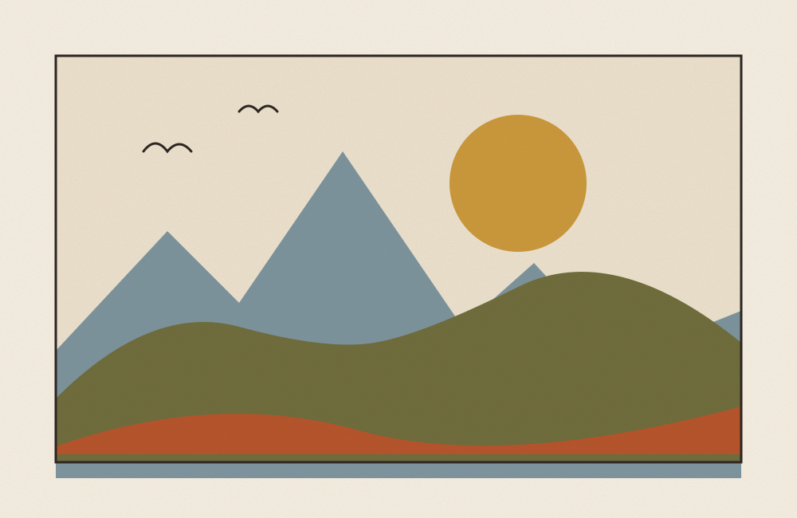
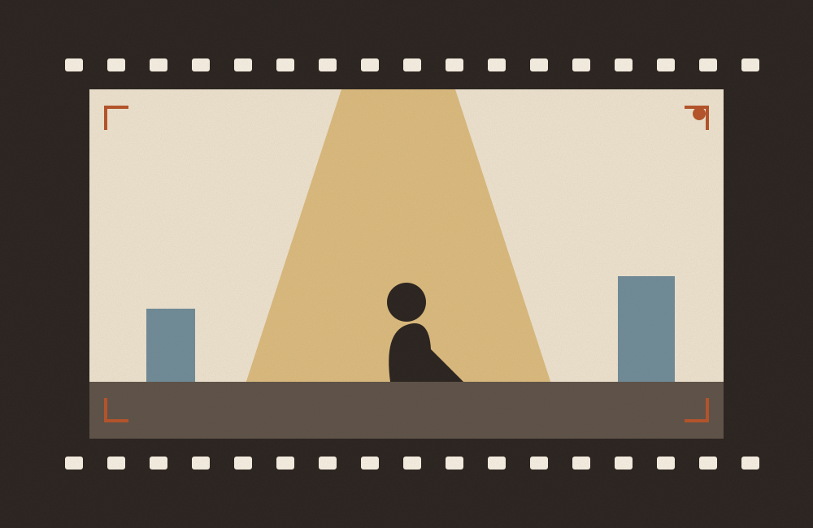

Masaüstü Uygulaması
Kömür
Yerel AI, isteğe bağlı ses, hafıza ve günlük işler için Python masaüstü kedisi.
Proje ve indirmelerÖĞRENCİ PORTFOLYOSU · ANTALYA, TR
ONUR CAN ORHAN / PORTFOLIO 2026
Her satır kod, yeni bir dünyanın başlangıcı.
Onur Can Orhan · Bilgisayar Programcılığı öğrencisi · Oyun geliştirici adayı
YAZILIM × YARATICILIK
Onur Can Orhan Bilgisayar Öğrencisi | Oyun Geliştirici Adayı Yazılım ve yaratıcılığın buluştuğu noktada kendimi geliştiriyorum. Python ve CSS öğreniyor, gelecekte kendi oyunlarımı geliştirmeyi hedefliyorum.
01 / SEÇİLİ ÇALIŞMALAR
Öğrenme sürecimden oyunlar,
denemeler ve görsel keşifler.
Masaüstü Uygulaması
Yerel AI, isteğe bağlı ses, hafıza ve günlük işler için Python masaüstü kedisi.
Proje ve indirmeler
Oyun
Tarayıcıda oynanabilen, HTML5 Canvas ve JavaScript ile geliştirilmiş uzay temalı oyun denemem.
Oyunu Oyna
Grafik Tasarım
Animasyon ilkeleri ve yazı hareketleri için örnek proje kartı.

Grafik Tasarım
Katmanlar ve renk uyumu üzerine örnek proje kartı.
02 / GÖRSEL GÜNLÜK

Çizim ve eskiz pratiğinden esinlenen soyut bir çalışma.

Çizim ve eskiz pratiğinden esinlenen soyut bir çalışma.

Çizim ve eskiz pratiğinden esinlenen soyut bir çalışma.
ÖĞREN / ÜRET / PAYLAŞ
Semantik HTML, responsive CSS ve erişilebilir etkileşimler.
JavaScript ve Canvas ile küçük tarayıcı denemeleri.
Tipografi, katman ve renk örnekleriyle öğrenme.